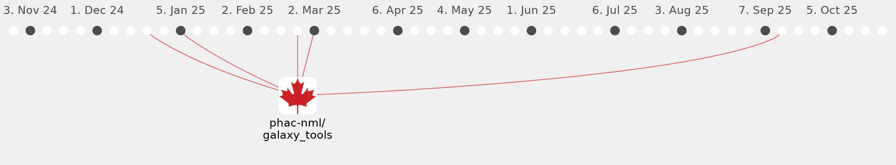

Galaxy Community Activities
kbessonov1984
kbessonov1984
https://github.com/kbessonov1984
Commits all-time:
142
Commits last year:
25

phac-nml/galaxy_tools
(25)
f5f889a
9c984ae
fb897cb
01dff58
d3fd8e2
6a7b6e0
5c32266
2f4d8b6
8bd2d0f
b163bb4
ebfc22d
37211ae
9137349
7c72cfb
bc53cd0
4229258
bd4b6a0
7a4efe1
8da2444
3cb089e
609c728
83c3070
5ce0e75
32d33b6
fdca1f9